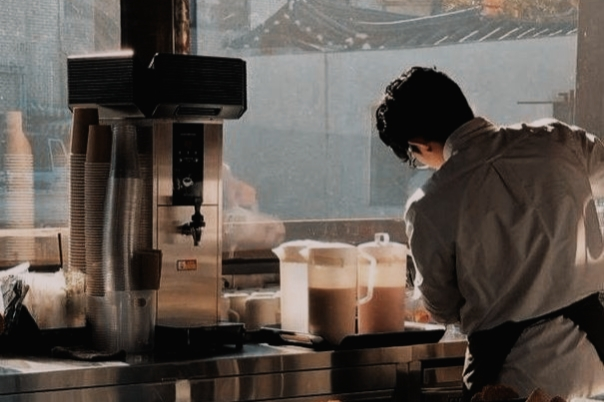
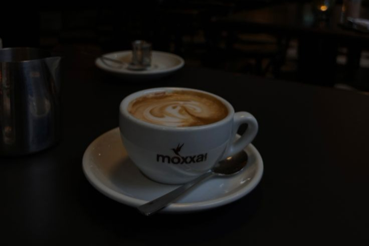
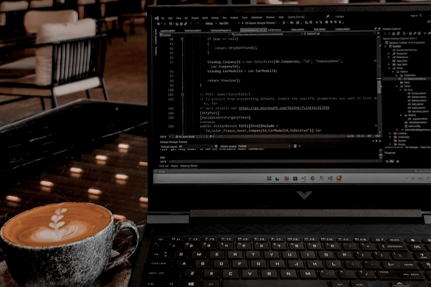
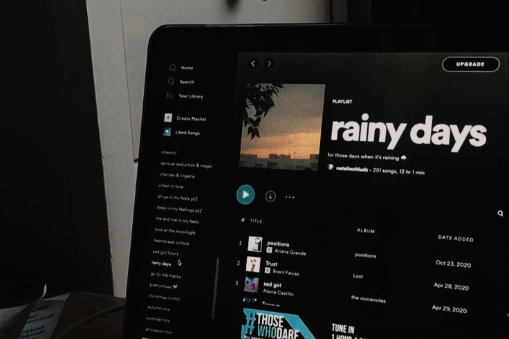

ABOUT US
───
BAD DAY? COFFEE! GOOD DAY? COFFEE!
STRESSED? COFFEE! HAPPY? COFFEE?
INSPIRED? COFFEE!
COFFEE? COFFEE!
•••
Coffee is more than just a beverage to us.
It represents
moments of connection, refresh, and reflection. The
message it carries for us is the importance of taking time
for oneself, finding joy in the little things, and appreciating
the present moment.
|  |
「 WELCOMING WORKERS 」
Toffee Cup Co is ensuring that all customers should be treated with respect. Our place is maintaining a positive atmosphere which will help in building a better community for caffeine drinkers. We ensured that we trained and hired them with the good manners as a main attribute a worker should have in our shop.
|  |
「 QUALITY PRODUCTS 」
Before establishing our shop, we made sure to find a coffee beans which will create a great experience on customers by visiting Toffee Cup Co. A caffeine which you will always look for in a bunch of coffee shop in our country. The menu of ours has a variety to choose from and rest assured that you won't step your foot out with an empty stomach.
|  |
「 CONVENIENCY 」
This shop are for the students and employees who are waking up at dawn to work and study. It is a place where we are offering a wifi password in order to finish the tasks and schoolworks that we can't do at home. Toffee Cup Co is a place to be called your home aside from your workplace and house.
|  |
「 MUSIC PLAYLISTS 」
music is crucial on changing our mood. there are music which makes us sentimental, groove, and even happy. Toffee Cup Co. is a place where you can relax, its aim is to create a peaceful place for the customers where they can forget the pressure of doing well in our life. but rather, enjoy the little things that the present moment has today.